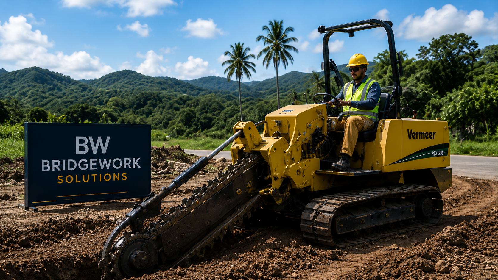
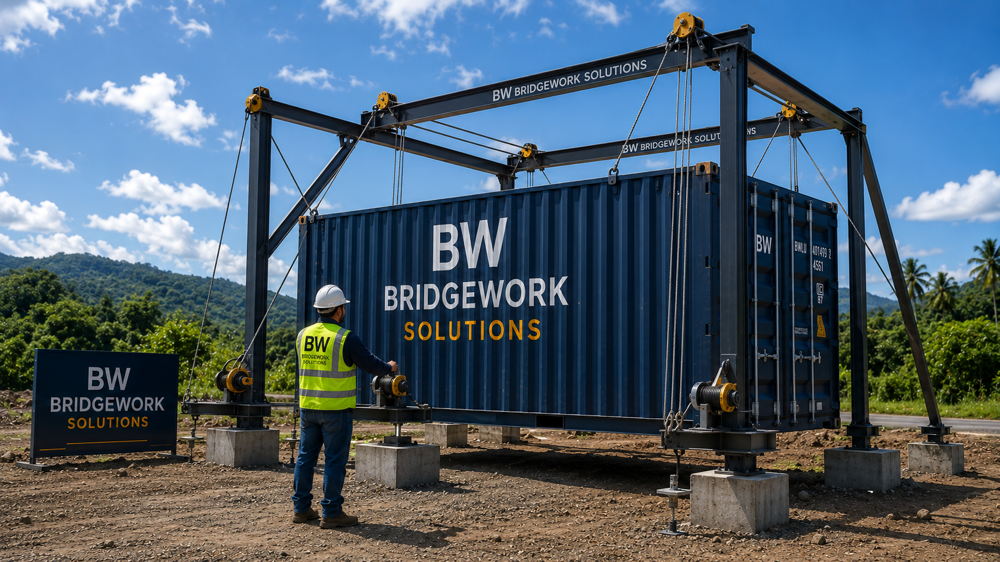
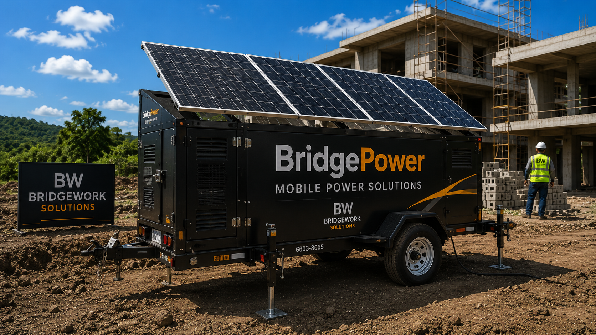
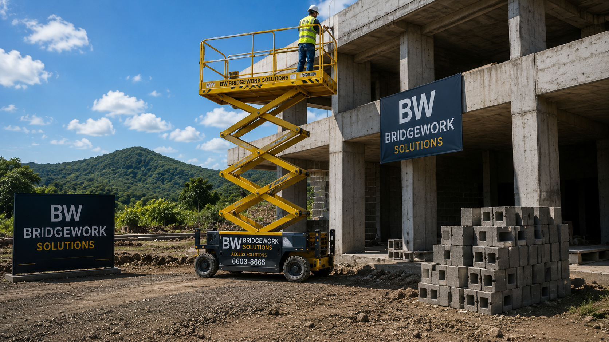
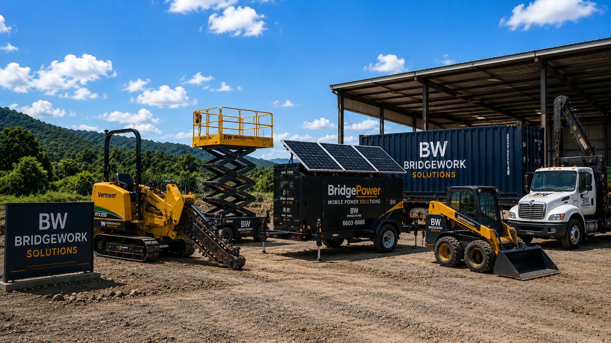
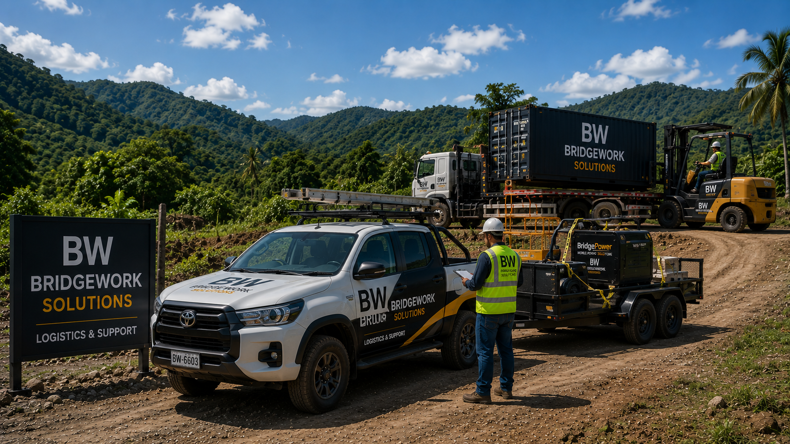

Alquiler de equipos, soluciones móviles de energía y apoyo práctico en obra, diseñados para mantener los proyectos avanzando con eficiencia en Panamá.

Zanjeo eficiente para servicios públicos, drenajes e infraestructura, ayudando a preparar obras con mayor rapidez y precisión.

Colocación precisa de contenedores de 20 y 40 pies sin necesidad de grúa, ideal para sitios con acceso limitado o condiciones complejas.

Unidades BridgePower que proporcionan energía inmediata mientras se gestionan conexiones eléctricas permanentes o soluciones temporales de obra.

Equipos de acceso elevado y plataformas que permiten trabajos más seguros, rápidos y eficientes en construcción y mantenimiento.

Equipos especializados disponibles para proyectos de corto y largo plazo, con enfoque en productividad, seguridad y confiabilidad.

Transporte, movilización y apoyo práctico para mantener los proyectos funcionando con mayor orden, continuidad y control.
BridgeWork Solutions ayuda a los clientes a reducir tiempos muertos, mejorar la productividad y resolver necesidades prácticas en obra.
Revisamos las necesidades del proyecto, el acceso al sitio, los tiempos y los equipos requeridos.
Coordinamos transporte, entrega, instalación y logística para que los equipos estén disponibles cuando se necesitan.
Apoyamos la operación con soluciones prácticas que mantienen el proyecto avanzando.
Coordinamos el cierre, retiro de equipos y seguimiento para asegurar una entrega ordenada.
Muchos proyectos pierden tiempo y dinero por falta de equipos adecuados, mala coordinación logística o soluciones temporales improvisadas. BridgeWork Solutions ofrece herramientas y apoyo práctico para mantener la obra organizada y productiva.
BridgeWork Solutions fortalece a las demás divisiones al ofrecer apoyo operativo, equipos, energía móvil y soluciones prácticas que permiten ejecutar proyectos con mayor eficiencia.
Nos enfocamos en planificación clara, coordinación confiable y entrega responsable desde la primera conversación hasta el resultado final.
Contáctenos